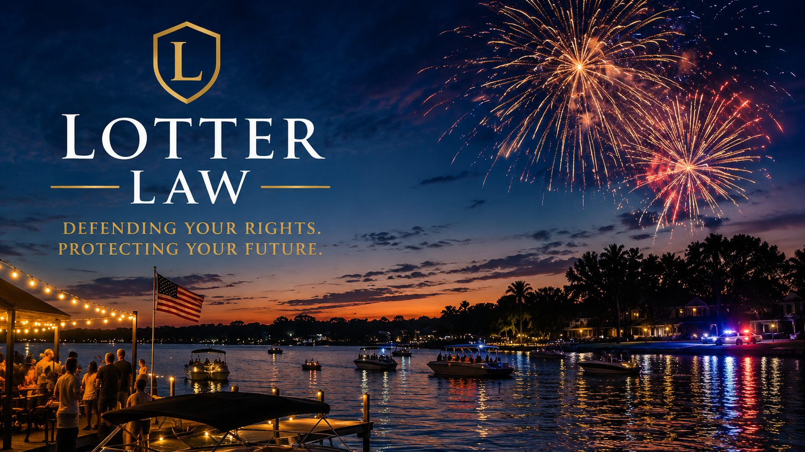

July 4th DUI & BUI Crackdown: What Florida Drivers and Boaters Need to Know

The Fourth of July is one of the deadliest and most heavily policed holidays on Florida's calendar. Cookouts that start at noon, fireworks after dark, and a long weekend on the water combine to make this one of the top three nights of the year for DUI arrests -- and one of the busiest for boating-under-the-influence enforcement, too.
If you're planning to celebrate in Central Florida this year, here's what the enforcement operation looks like, what your rights are on the road and on the water, and what to do if you're arrested.
Why July 4th Is Different From an Ordinary Holiday
Independence Day enforcement isn't routine patrol. Central Florida agencies plan for it weeks in advance, often with overtime funded by state and federal traffic-safety grants tied to the national "Drive Sober or Get Pulled Over" campaign:
The Enforcement Playbook
- Extra DUI patrols: Officers on overtime whose only assignment is spotting impaired drivers -- starting in the afternoon, not just at bar-closing time.
- Saturation patrols: Concentrated units near fireworks displays, lake access points, and the entertainment districts of downtown Orlando, Winter Park, and International Drive.
- DUI checkpoints: Fixed sobriety checkpoints, which Florida permits under strict constitutional rules (more on that below).
- Marine units: Florida Fish and Wildlife (FWC), the Coast Guard, and county marine patrols run dedicated BUI operations on the Butler Chain, Lake Tohopekaliga, the St. Johns River, and Mosquito Lagoon.
- Multi-agency coordination: OPD, Orange County Sheriff, Florida Highway Patrol, and FWC all participate over the long weekend.
The Daytime Trap
Unlike a typical Friday-night DUI, Fourth of July impairment builds slowly over a full day in the sun. Dehydration and heat amplify alcohol's effects, and many drivers are arrested in the early evening after drinking since lunch -- long before they would think of themselves as "out late drinking."
DUI on the Road: The Penalties
Under F.S. 316.193, you can be charged with DUI in Florida if you're driving with a blood- or breath-alcohol level of .08 or higher, or if your normal faculties are impaired by alcohol or any controlled substance. A first conviction carries serious consequences:
- Fines: $500-$1,000 for a first offense ($1,000-$2,000 if your BAC was .15 or higher, or a minor was in the vehicle)
- Jail: Up to six months (up to nine months for an elevated BAC)
- License revocation: 180 days to one year
- Other requirements: 50 hours of community service, DUI school, a 10-day vehicle impound, and possible ignition interlock
A clear understanding of how first-offense DUI penalties actually work in Florida is the starting point for any defense -- and many of those penalties are negotiable or avoidable depending on how the stop and the testing were handled.
BUI: Impairment on the Water Is a Crime Too
Florida leads the nation in registered vessels, and the Fourth of July is the single busiest boating day of the year. Many people don't realize that boating under the influence is a separate criminal offense under F.S. 327.35 -- with the same .08 legal limit and penalties that closely track the DUI statute.
How BUI Stops Differ From Traffic Stops
- No reasonable suspicion required to board. FWC and the Coast Guard can stop your vessel for a routine safety or registration inspection without any suspicion of a crime -- something officers cannot do to your car.
- Field sobriety tests are adapted for the dock. Standard roadside exercises don't translate to a rocking boat, so officers use seated "float tests" and other variations that are easy to challenge.
- "Boater's fatigue" is real. Sun, wind, glare, noise, and motion impair coordination and balance on their own -- and officers often mistake those effects for intoxication.
Your Rights at a Checkpoint or Stop
Whether you're stopped on Orange Blossom Trail or boarded on Lake Butler, your core rights are similar. DUI checkpoints are legal in Florida, but they must follow strict constitutional requirements -- and knowing what you can decline matters.
What You Don't Have to Do
- Answer questions about drinking. "How many have you had today?" is an investigative question. You can politely decline: "I'd prefer not to answer questions."
- Perform field sobriety exercises. The walk-and-turn, one-leg stand, and HGN eye test are voluntary, with no legal penalty for declining.
- Take a roadside breath test (PBT). The portable test at the scene is voluntary and separate from the official station test.
The Implied Consent Warning
If you're arrested and taken in, you'll be asked to take an official breath test on the Intoxilyzer. Under Florida's implied consent law (F.S. 316.1932), refusing triggers an automatic one-year license suspension for a first refusal -- and the refusal can be used against you at trial. Florida's DUI refusal law has only grown more aggressive, so understand the trade-off before you decide.
What to Do If You're Arrested
Immediate Steps
- Stay calm and be polite. Everything you say and do is being recorded -- arguing on the roadside or the dock never helps.
- Exercise your right to remain silent. After identifying yourself, "I'd like to speak with an attorney" is the safest response.
- Write down the details. Time, location, what you ate and drank, what officers said, and whether body or boat cameras were visible.
- Request a DHSMV hearing within 10 days. Your license suspension begins automatically unless you or your attorney request a formal review within 10 calendar days of arrest.
- Call a defense attorney early. The 10-day license clock and the technical defenses in checkpoint and BUI law make prompt advice critical.
The good news: holiday DUI and BUI cases are often more defensible than ordinary ones, precisely because the enforcement is rushed and high-volume. Checkpoint paperwork errors, improvised field tests, and breath-test maintenance gaps are exactly the kinds of issues that can get evidence thrown out. There are several proven ways a DUI can be dismissed in Florida, and many of them turn on how the holiday stop was conducted.
Bottom Line
Fourth of July enforcement in Central Florida is a coordinated, well-funded operation on both the roads and the water. The smartest move is to plan your ride and your captain before the first drink -- but if you do get arrested, remember that you can be polite and cooperative while still declining field sobriety exercises and roadside breath tests. Those decisions, and an early call to a lawyer, can make all the difference.
Arrested for DUI or BUI over the Fourth of July?
You have 10 days to save your license. Call now for a free consultation -- we'll review the checkpoint procedures, body and marine camera footage, and breath test evidence to build your defense.
Free Consultation: 407-500-7000Related Articles
DUI Checkpoint Rights in Florida: What You Need to Know
Checkpoints are legal in Florida, but your rights don't disappear. Learn what officers can and cannot do at a sobriety checkpoint.
Can a DUI Be Dismissed in Florida? 7 Ways to Beat Your Case
From illegal stops to breath test errors -- seven proven strategies for getting DUI charges dismissed.
Super Bowl DUI in Florida: What to Expect
Another peak enforcement night -- how Central Florida agencies ramp up patrols and checkpoints around big events.
DUI Penalties in Florida: Fines, Jail & License
A complete breakdown of what a DUI conviction costs you -- fines, jail exposure, and license consequences.